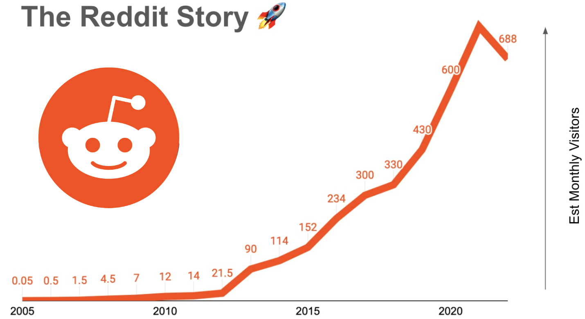
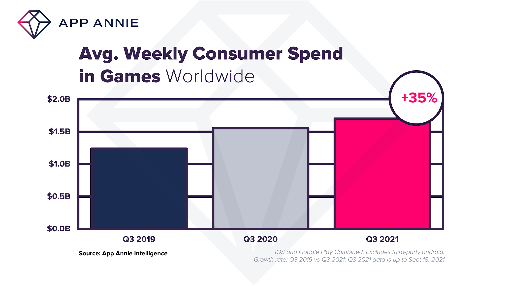

A Walk Through of the Project
Reddit is a social news platform and a discussion board where users vote on and socially select content. The Reddit story increased rapidly in the recent years. The website makes fun of the phrase "I read it." The site comprises hundreds of subcommunities, known as subreddits, and each has a specific topic. Today, Reddit is one of the world's most popular social platforms, with over 430 million active users. We wish to use Reddit data as our main source of study because it is an open source that contains popular news among ordinary citizens.
reference: https://www.digitalinformatieonworld.com/2021/09/mobile-game-spending-continues-enormous.html
People spend 35 percent more time on games compared to two years before. Our topic is the Game theme since it was Reddit's second most popular theme in 2021. Additionally, every one of the top five most visited subreddits relates to Game. Reddit provides an online platform to share gaming experiences and discuss game content; game players and developers can get inspiration and share ideas, walkthroughs, and guides.
reference: https://www.aakashg.com/2022/06/06/reddit/
To be specific, since the Game theme contains a large portion of different subreddits. Our group concentrated our investigation on two key subreddits. Because of the Reddit data's timeliness, we only use half of the years' data to decide the most population subreddit for current society. For other analyses, we will use more data, one and a half years, to show how these two subreddits' features. We will examine ten business questions through our study of the data, including the popularity of the games, their suitability for teenage viewers, whether or not they have received favorable or negative comments from users, the periods when posts are most active, etc. These questions will be listed below. We will also show our ideas and findings through the projects.
The reason why we would like to inquire more on Game this topic is that this report can purpose some inspiration to Game manufacturers and game designers. Reddit lovers or bloggers can also use the analysis tips through the project to make their posts more popular. Hope more people can use our project's analysis to explore more.